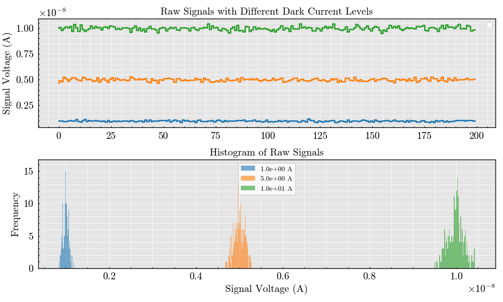

Note
Go to the end to download the full example code.
Dark Current#
This example illustrates the impact of varying dark current levels on a flow cytometer detector signal. The detector is initialized, dark current noise is applied, and the resulting signals are visualized along with their distributions.
/home/runner/work/FlowCyPy/FlowCyPy/docs/examples/noise_sources/dark_current.py:70: UserWarning: No artists with labels found to put in legend. Note that artists whose label start with an underscore are ignored when legend() is called with no argument.
ax_signal.legend()
import matplotlib.pyplot as plt
from FlowCyPy.detector import Detector
from FlowCyPy import units
from FlowCyPy.signal_digitizer import SignalDigitizer
from FlowCyPy import NoiseSetting
NoiseSetting.include_noises = True
NoiseSetting.include_shot_noise = False
NoiseSetting.include_dark_current_noise = True
NoiseSetting.include_thermal_noise = False
NoiseSetting.include_RIN_noise = False
# Define dark current levels
dark_currents = [1e-9 * units.ampere, 5e-9 * units.ampere, 1e-8 * units.ampere] # Dark current levels in amperes
# Create a figure for signal visualization
fig, (ax_signal, ax_hist) = plt.subplots(2, 1, figsize=(10, 6), sharex=False)
signal_digitizer = SignalDigitizer(
bit_depth='14bit',
saturation_levels='auto',
sampling_rate=1e6 * units.hertz, # Sampling frequency
)
# Loop over the dark current levels
for dark_current in dark_currents:
# Initialize the detector
detector = Detector(
name=f"{dark_current.magnitude:.1e} A",
responsitivity=1 * units.ampere / units.watt, # Responsitivity (current per power)
resistance=50 * units.ohm, # Load resistance
numerical_aperture=0.2 * units.AU, # Numerical aperture
phi_angle=0 * units.degree, # Detector orientation angle
temperature=300 * units.kelvin, # Detector temperature
dark_current=dark_current # Dark current level
)
# Initialize the raw signal
dataframe = detector.get_initialized_signal(run_time=200e-6 * units.second, signal_digitizer=signal_digitizer)
# Add dark current noise to the raw signal
detector._add_dark_current_noise_to_raw_signal(dataframe['Signal'])
signal_digitizer.capture_signal(dataframe['Signal'])
# Plot the raw signal on the first axis
ax_signal.step(
dataframe.index,
dataframe.Signal.pint.quantity.magnitude
)
# Plot the histogram of the raw signal
ax_hist.hist(dataframe['Signal'], bins=50, alpha=0.6, label=detector.name)
# Customize the axes
ax_signal.set_title("Raw Signals with Different Dark Current Levels")
ax_signal.set_ylabel("Signal Voltage (V)")
ax_signal.legend()
ax_hist.set_title("Histogram of Raw Signals")
ax_hist.set_xlabel("Signal Voltage (V)")
ax_hist.set_ylabel("Frequency")
ax_hist.legend()
# Show the plots
plt.tight_layout()
plt.show()
Total running time of the script: (0 minutes 0.546 seconds)